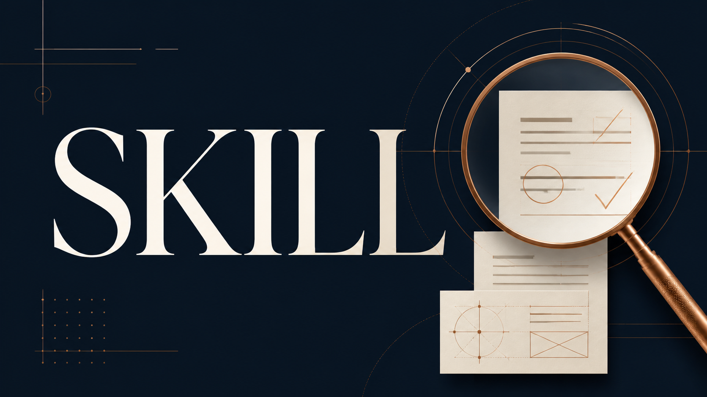

技能包 · 學術工具 · 學術研究
國際期刊投稿前預審
2026.08 · 個人專案

FIG. 09 — 產品主畫面
關於這個作品
投稿前預審工作流會先建立可追溯的證據地圖，再以 Editor-in-Chief、Technical Editor 與領域審稿觀點檢查手稿的定位、方法、證據與呈現。
每項發現都有嚴重度、可行性與優先順序，並產出可直接交給修稿流程使用的中英文交接文件；修訂後也可進行 re-review，確認每一項意見是否真正被處理。
作品亮點
主編、技術編輯與領域審稿多角度檢視
先建立證據地圖，再提出可追溯意見
Blocker／Major／Minor 分級與行動優先順序
支援初審與修訂後再審